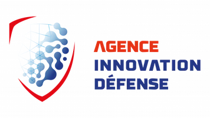
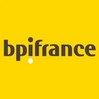
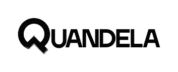
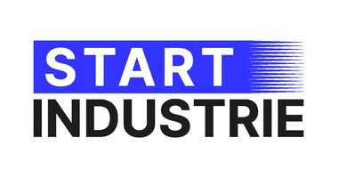

Agence de l'Innovation de Défense (AID)
Pilote, coordonne et soutient l'innovation au sein du ministère des Armées. Identifie les ruptures technologiques critiques, finance les projets innovants et accélère leur passage en capacité opérationnelle.

Bpifrance
Banque publique d'investissement chargée d'accompagner entreprises, startups et PME à chaque étape de leur croissance : financement, innovation, fonds propres, garantie et accompagnement stratégique.
Euronext
Principale place boursière paneuropéenne, opérant les marchés de Paris, Amsterdam, Bruxelles, Lisbonne, Oslo, Dublin et Milan. Joue un rôle fondamental dans l'accès des entreprises au financement via les marchés.
GICAT / GENERATE
Groupement des industries françaises de défense et de sécurité terrestres et aéroterrestres. Le programme GENERATE accompagne les startups duales et les intègre aux écosystèmes industriels et opérationnels.
NSI Group
Acteur industriel spécialisé dans la conception, la protection et l'intégration de solutions hautement sécurisées pour les environnements sensibles : défense, sûreté et infrastructures critiques.
Starburst
Accélérateur mondial dédié aux secteurs de l'aérospatial, de la défense et des technologies duales. Accompagne les entreprises en phase d'amorçage ou de croissance.

Quandela
Leader européen des technologies quantiques photoniques. Développe des calculateurs quantiques, des solutions de cybersécurité quantique et des briques technologiques essentielles au computing quantique.

Start Industrie
Accompagne les startups industrielles dans leur passage à l'échelle, leur structuration et leur industrialisation, notamment dans les secteurs stratégiques.
La French Fab
Étendard de l'industrie française. Fédère les entreprises industrielles engagées dans la modernisation, la transformation numérique et la transition vers une industrie durable et souveraine.
Défense Angels
Premier réseau de business angels dédié aux technologies de défense, de sécurité et duales. Finance et accompagne des startups développant des solutions clés pour la souveraineté technologique.
La Place Stratégique
Média et plateforme spécialisée dans les enjeux de souveraineté, de défense, d'industrie et de stratégie.
ESTRADS Certification
Accompagne les acteurs industriels, institutionnels et technologiques dans la certification, la qualification et l'évaluation de systèmes critiques.
The Sov Company
Développe des solutions et services dédiés à la souveraineté technologique et informative. Analyse stratégique et sécurisation des infrastructures critiques.